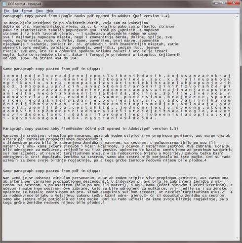

Loading Profile...
Loading Profile...


I have lots of pdf's not in English used for regional research. While it would be nice if Qiqqa OCR supported the language it isn't vital as the books are already OCRed (Google Books) or I do a manual OCR in ABBY.
And reading here I found a statement that
"Qiqqa calls all forms of "text extraction" from the PDFs ocr, whether it is getting already OCRed text straight from the PDF data file or whether it actually has to perform optical character recognition. So perhaps you are seeing the former."
However the text that Qiqqa extracts from the pdf is not the same as what I get from the pdf when I copy paste from Acrobat. This makes the text in Qiqqa problematic and in some cases totally useless.
Besides totally ignoring 'non breaking spaces' that deal with the breaking of the words across lines that adobe handles just fine, it randomly breaks certain words up.
The google book it totally hashed up and broke every letter up. Making it totally unsearchable.
image with comparison attached
Is there any way to fix this? 
Qiqqa OCR/text extraction not matching pdf text
{kind=link}
-
 Comments on your examples:
Comments on your examples:
1. Extra spaces in the first example are likely a result of encoding issues, for example UTF-16 being interpreted as ASCII. I suspect a bug/limitation in Qiqqa.
2. Occasional extra spaces in the second example could also be encoding or spacing recognition problems in OCR. For example, in UTF-8, accented characters might show up with extra spaces but characters < 128 in ASCII would not.
3. Qiqqa keeps its word list separate from the pdf, and treats the returns in the text as spaces. Qiqqa basically uses the text for indexing, searching, pattern analysis.
4. If you are in Qiqqa and want to copy with the returns, just select "Open in exernal pdf viewer" from the menu, and it will open in Acrobat.
I always run scanned documents through ABBYY before Qiqqa import - accuracy is better for me. -
It's not about copying the text.. I just did it to see what is happening, when search returned no results in Qiqqa but the search worked fine in Acrobat. And when I highlighted and copied the text I realized it could not return results since there are no words that can be recognized in the way the first document was read/imported by Qiqqa.
2. the ABBY scan it totally random. and the words broken, at least in this paragraph, are ones without any special characters. like Naravno becoming Nar avno,
While running documents through ABBY is not a bad idea, a lot of the documents I deal with are pdfs of historical books (1800's early 1900's) and if you have ever run OCR on those you know that old print like that requires a lot of clean up. So even though the Google book version is not perfectly OCRed and there are some spelling mistakes, redoing the OCR on a 500 page book and cleaning it up is a huge time investment I just don't have. Specially since I have lots of these books.
The whole point of using Qiqqa was to make organizing the documents I needed to deal with on certain topics easier, and not having to open each one individually to search for what I was looking for.
Which brings me to another point I noticed and that is when I do a search in the library if I search for a 'partial' word if that partial does appear as a word in off it self if will give me all the results full and partial ie searching canon finds results like canon, canonici, canonical, etc. But if the partial word in the search is not a word in itself it will return 0 results in the library, but will return results in the individual document in Qiqqa.
This is a problem because in Croatian I'm working in now but in other languages as well the nouns (and other words) change based on declination, gender...
so if in this instance I'm looking for all mention of the name Ante I'm looking for results like Ante, Anti, Anta these are all declinations of the name. So I search for 'Ant' except in library this gives me 0 results. In the document view I have results.
Using wildcards like ? or * give me 100% search score that you then can't open to view. Plus this is not in the middle of the word so it should not need a wildcard.
I'm totally new to Qiqqa, and so many are raving about it and I want/need it to work for me, but don't know what to do about the issues. if they can be somehow resolved, if they are bugs to fix or if its just a limitation of the program, in which case I need to look for a different solution. -
Spacing - I've looked at this some more. It looks like a bug in the way Qiqqa interprets spacing during text extraction and nothing to do with encoding.
Search - Search is quirky. My guess is that the library search engine uses the Lucene engine to search the index and locate documents, but another mechanism to search within the document. Certainly a questionable and poorly documented "feature".
I don't see any solution except a new version of Qiqqa. Unfortunately, Qiqqa has been stuck at v79 for over a year despite several bug reports and feature requests appearing on this forum.